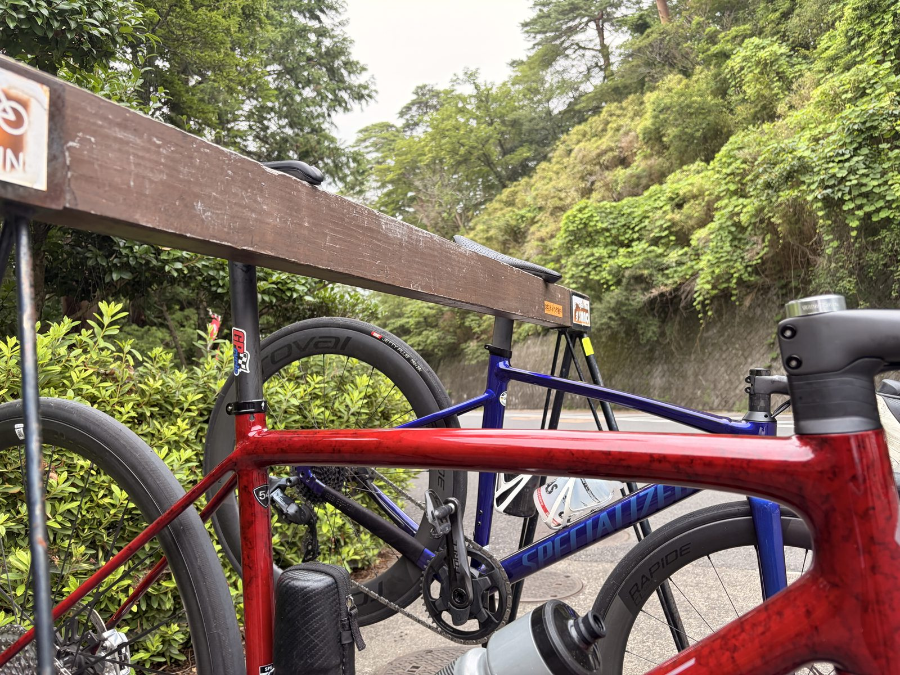
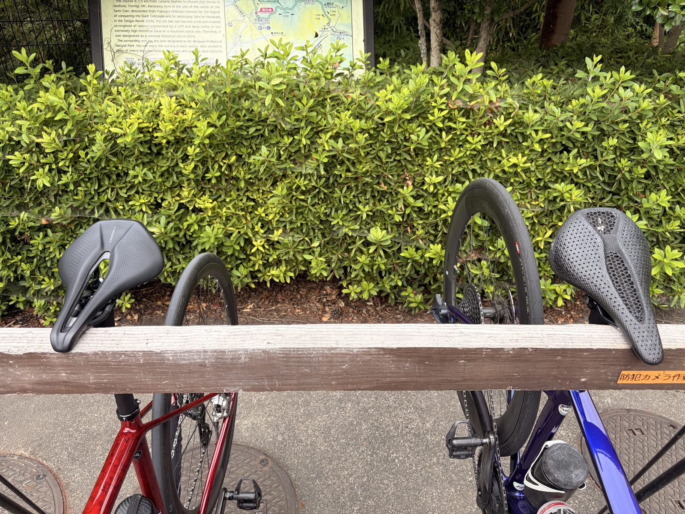

友人と話しながら唐沢5本。高出力を控えて登った日
今日は友人と唐沢へ行った。予定はいつも通り5本。ただし膝の前側に軽い違和感があるので、高出力は使わず会話ペースで登る。
唐沢5本という文字だけを見ると強そうだが、今日は本数より中身が大事な日だった。メニューをなくすのではなく、軽いギアを使って強度だけを落としてみる。

唐沢5本でも今日は低強度
前日までは、外ゴルビー、ローラーSST、太平坂ONと強めの練習が続いていた。その後に渡良瀬遊水地でアクティブレストを入れたが、生活中に膝前側の軽い違和感がたまに出ていた。
自転車に乗っている間は痛くない。前日の回復走でも悪化しなかった。そこで今日は予定通り5本登りつつ、高出力だけを外すことにした。
結果は33.60km、2時間12分、獲得標高674m。平均100W、NP147W、IF0.535、TSS62.9、平均心拍101bpmだった。75kg基準では平均1.33W/kg、NP1.96W/kg。登りを5本使った低強度ライドという方が実態に近い。
高出力はほとんど使わなかった
パワーゾーンはZ1が1時間24分、Z2が約35分。330W以上は4秒、289W以上でも合計14秒だけだった。最大357Wは変速や短い加速で一瞬出た程度で、狙って維持した場面はない。
唐沢5本という形は同じでも、全部踏み切る日とはまったく別の練習になった。軽いギアを選び、ダンシングで強く踏み込まず、友人との会話が続く範囲で淡々と登った。

話しながら登ると5本でも長く感じない
ローラーで20分走をしていると、まだ12分、まだ8分と時計ばかり見る。でも友人と話しながら外を走ると、時間の進み方がかなり違う。
登りなので何もしなくても楽というわけではない。それでも話しながら登り、下って、また登る。気づけば2時間以上乗り、獲得標高も674m。それでいてTSSは62.9に収まった。
何より、こうやって一緒に走りながら話せる友人がいることに改めてありがたみを感じた。高出力を出したとか、タイムを縮めたとかではないけれど、こういう日があるから自転車を長く続けられるのだと思う。
冬の山頂コーヒーが、まだ最近に感じる
冬に山頂で暖かいコーヒーを飲んでいたのが、割と最近のことに感じる。ところが記録を見返すと、友人との唐沢ライドは12月くらいから月2回、多い時には毎週のように続いていた。
寒い時期から始まり、気づけば夏である。同じ山を半年以上、月に何度も登っている。改めて数えてみると、何気にすごい。
同じ唐沢でも、ゴルビーの日、会話ペースの日、サドルを試す日で中身は変わる。コースは同じなのに記事の材料が尽きないあたり、唐沢にはだいぶ働いてもらっている。
膝の違和感は少し引いた感じ
膝前側の違和感は現状維持か、少し引いたように感じる。今日も走行中の痛みはなく、唐沢を5本登った後にも悪化した感じはなかった。
これだけで原因は決められない。ただ、高出力を控えて軽く動いた範囲では悪化しなかった。今のところは良い方向に進んでいるので、もう少し慎重に様子を見る。
サドルを並べてみた
休憩中に、友人のサドルと私のS-WORKS Power 155mmを並べて写真を撮った。同じロードバイク用でも、幅や先端の長さはかなり違う。
私のPowerはショートノーズで、後ろ側の座面が広い。交換後はお尻の痛みがかなり減り、今日のように2時間以上乗っても大きな問題にならなかった。155mmの幅が合うのか、形状との相性なのかはまだ分からないが、現時点ではかなり良さそうだ。

今回やってみて思ったこと
同じ唐沢5本でも、全部踏み切る日と、友人と話しながら低強度で登る日では内容がまったく違う。今日は予定を中止せず、強度だけを変える選択がうまくできた。
膝は悪化せず、少し引いたようにも感じる。そして半年以上、何度も同じ山を一緒に登ってきたことにも気づけた。数字を積む日ではなかったが、こういう日もかなり大事である。
自分用メモ
- メニュー友人と会話ペースで唐沢5本。高出力は使わない
- 全体33.60km / 2時間12分 / 獲得標高674m / 平均100W / NP147W / IF0.535 / TSS62.9
- 強度75kg基準で平均1.33W/kg、NP1.96W/kg。平均心拍101bpm
- 高出力330W以上4秒、289W以上14秒。狙った高出力走はなし
- 膝走行中の痛みなし。走行後の悪化なし。現状維持か少し引いた感じ
- 継続12月頃から月2回、多い時は毎週。冬の山頂コーヒーから半年以上